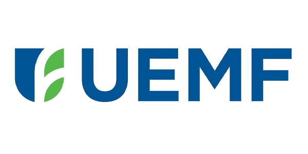

Placée sous la Haute Présidence d’Honneur de son initiateur Sa Majesté Le Roi Mohammed VI, l’Université Euromed de Fès (UEMF) est une institution d’utilité publique et à but non lucratif labélisée par l’Union pour la Méditerranée (UpM) avec l’appui de ses 43 pays membres.
Le projet de création de l'UEMF émane de l'Initiative Royale avec la volonté de créer à Fès un cadre d'enseignement supérieur et de recherche basé sur le dialogue interculturel, l'échange et la coopération entre les deux rives de la Méditerranée, avec un prolongement naturel vers l’Afrique Subsaharienne, tout en offrant des formations d’excellence et en conduisant des recherches scientifiques de très haut niveau en lien étroit avec le monde socio-économique.
Le gouvernement marocain a accompagné la mise œuvre l'UEMF de manière importante par des subventions tant pour son fonctionnement et pour l’assiette foncière pour son éco-campus que pour ses investissements.
L’UEMF a aussi bénéficié des dons de l’Union Européenne et d’un emprunt de 50% de ses investissements de la Banque Européenne d’Investissement et aussi d’un accompagnement de l’Union pour la Méditerranée.